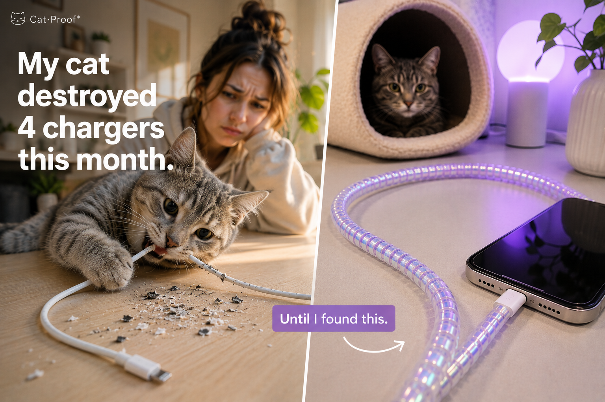
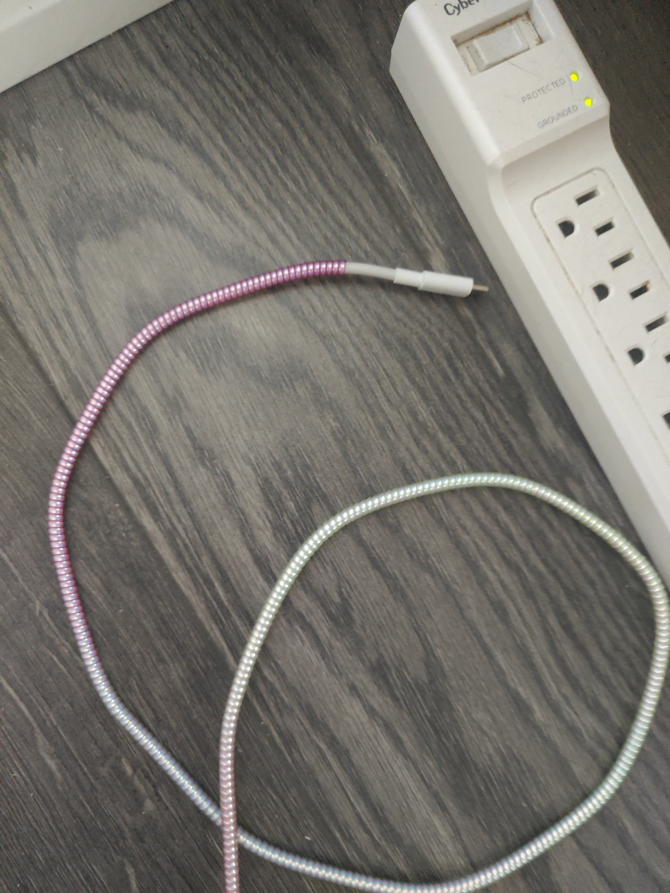
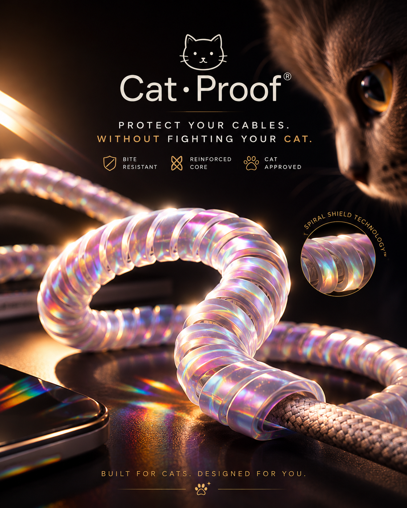
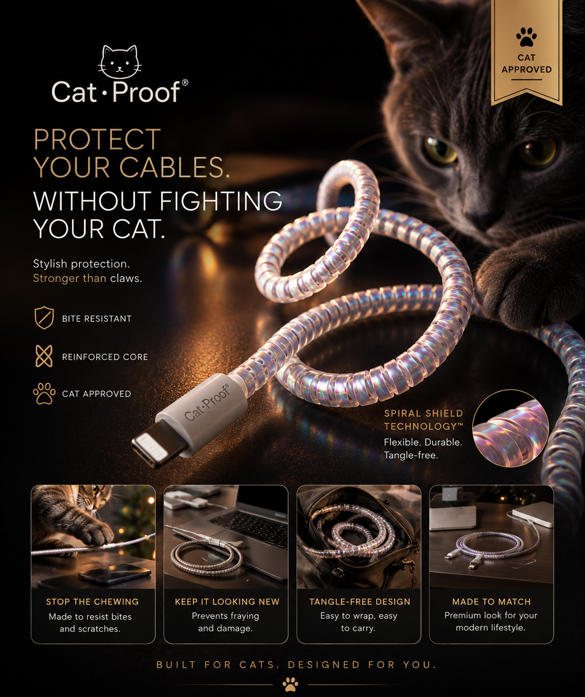

Hero Video
30s Campaign Film
The longer version introduces the problem, product promise, and brand feeling in one social ad.

Social Media Marketing Case Study
A fictional product campaign built from casual home-shot materials using AI-assisted visual production.
The longer version introduces the problem, product promise, and brand feeling in one social ad.
The shorter edit is built for fast scrolling, product recall, and quick campaign previews.
Before / After


Campaign Assets

This project shows how a low-cost product idea can become a complete social campaign package: concept, brand direction, ad visuals, and two video cuts for marketing use.